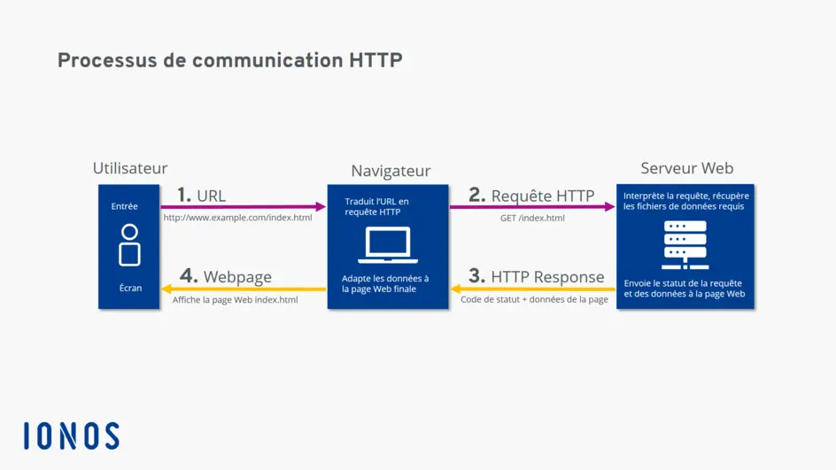

API, JSON, PORPISE, AJAX
LES API
API : Application Programming Interface
C'est une interface qui permet au moins à deux programmes ou services à communniquer entre elles
Exemple métaphorique :
- Tu est le client (le front end, cad le navigateur web)
- Tu commande un plat
- Le cuisinier le serveur du (backend) prepare
- Le cuisinier prepare ke plat à partir du garde manger, (la base de données) dans le serveur API
- L' AJAX ou FLETCH joue le role de garçon de restaurent : il prend ta commande, la transmet à la cuisine puis t'apporte le plat

Le JSON
Le JSON = JavaScript Object Notation
C'est un format de données léger, lisible humainement, utilisé pour échanger des données entre un serveur et une application web, ou entre deux application qui n'utiliseant pas le même language
A quoi sa sert ?
- Envoyer ou recevoir des données via une API
- Stocker des données dans une fichier
- Communiquer entre differente technologie (Java, PHP, Phython, Ruby, etc.....)
{
"nom": "Jean-Michel",
"age": 30,
"estActif": true,
"competences": ["HTML", "CSS", "JavaScript"]
}
Structure
- {} : objet
- Un systeme comme les objet de clé : valeur
- Les clés sont toujours entre guillemets
- Les valeurs autorisées sont :
- String Jean-Michel
- nombre 30
- booléen true/fasle
- tableau [ ]
- objet { }
- null
JSON vs Objet JavaScript
Attention ne pas confondre l'écriture d'un JSON avec un objet JS
{
"data" : [0, 2, 456],
"owner" : "Hippolyte de la boucherie",
"admin" : false,
"employees" : null
}
const user {
data : [0, 2, 456],
owner : "Hippolyte de la boucherie",
admin : false,
employees : null
};
Converstion JSON - Objet js
// convertin un json en object en javascript
// on va simuler un fichier JSON
const json = '{"nom" : "Jean-Michel", "age": 30}';
// on convertis la string en JSON en objet javascript
const obj = JSON.parse(json)
console.log(obj.nom)
// convertin un object javascript en JSON
const user = {
nom : "Jean-Bon",
age : 12,
}
const jsonObj = JSON.stringify(user)
console.log(jsonObj)
Les promises
Une Promises (une promesse) est un objet JS qui represente une opération asynchrone (c'est a dire qui ne se fait pas tout de suite)
Elle servent à éviter les "callback hells" ( des fonctions d'appel imbriquée entre elle de façon excessive)
L'enfer des rappels, aussi appelé "pryramide de la mort" est une situation où plusieurs rappels imbriquées sont utiliser pour gerer des operations asynchrone en JS. Cela se produit generalement lorsque plusieurs taches asynchrones dependent des resultats des autres.
Donc nous avons besoin des promesses pour améliorer la lisibilité des opérations asynchrones
Les promesses on trois états
- Resolve (reussite)
- Rejected (échouer)
- Pending (état d'attente)
LES AJAX !!!
AJAX = asynchronous JavaScript And XML
A quoi sa sert ?
- A faire une requette HTTP sans recharger la page
- Envoyer ou recevoir des données depuis un serveur API
- Crée des application web dynamique, (ex, liste article, formulaire)
Requtte HTTP => HyperText Transfer Protocol
C'est un protocol qui permet à un client , votre navigateur ou application de bureau, de communiquer avec un serveur web pour echanger des données ( HTML, JSON ou des images etc...)
